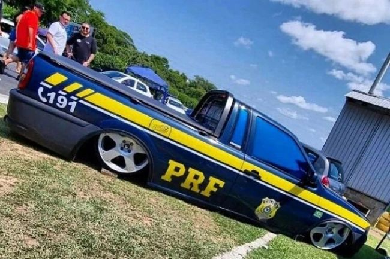
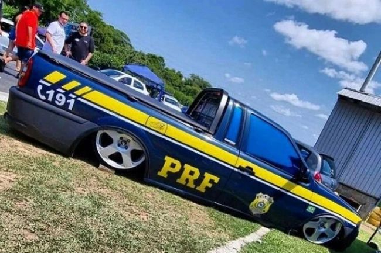

O que aconteceu com a Saveiro da PRF?
O carro foi guinchado pela PRF devido à alteração considerada crime segundo o artigo 296 do código penal
por quê após a chegada da PRF houve correria para retirar a plotagem da Saveiro, que aproveitava a pintura azul da carroceria junto a adesivos listrados amarelos e detalhes de carros oficiais, como o telefone 191. A corporação afirmou que Surfistinha do Duduuy não estava presente no local, com seu pai se apresentando para prestar esclarecimentos.